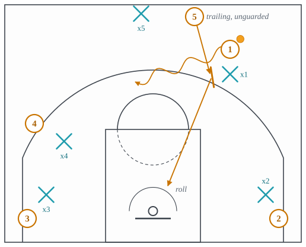
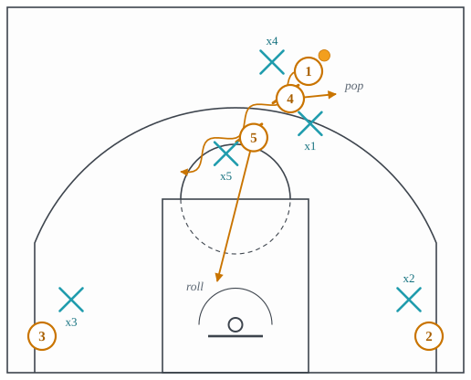
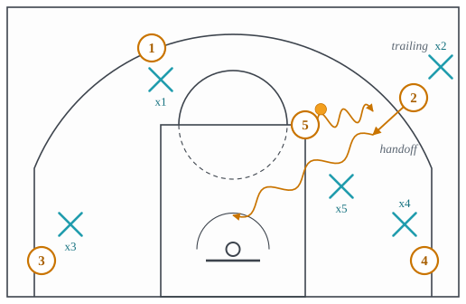
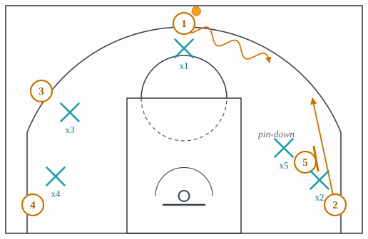
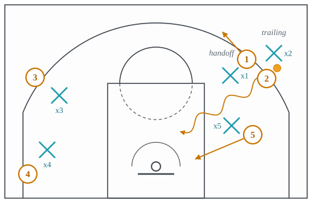
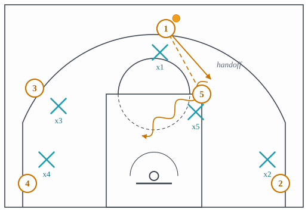

3.2: Early Offense
Chapter 3: Offense
Lecture 3.1 ended with the defense back but back badly: five defenders in the front court, cross-matched, the big still arriving, nobody yet in the stance they will be in ten seconds from now. Early offense is the set of actions built for exactly that state. It is not the break, because the numbers are even. It is not the half court, because the defense is not set. It is the ten seconds in between, and a team that has a plan for those ten seconds gets a good shot before the other team has finished getting organized.
Two things make the window worth attacking. First, the defense has matched up by proximity, not by assignment, so a guard may be standing next to a big and a big next to a guard. Second, the last defender back is usually the big, and the last attacker up is usually the other big. That trailing big is the whole subject of this lecture: he is the one player the defense has not accounted for, and every action below is a way of using him before they do.
This lecture takes the actions in the order a team learns them. Section 1 is the drag screen and the double drag, the trailing big screening the ball. Section 2 is pistol, the guard-to-wing entry. Section 3 is delay and the dribble handoff, the big holding the ball at the top of an empty floor. Section 4 is zoom and get action, the two handoff actions that start from a screen or a pass. Section 5 is what joins them: the trailer flip and flow, the rules that let a team run from one action into the next without a call. Each action is a card with the same five slots, and each card’s last slot names the coverage in Chapter 4 built to stop it.
1 The trailing big screens the ball
The drag screen is a ball screen set on the run. The ball-handler is dribbling up one side of the floor; the big is trailing him; instead of running to the block the big runs at the ball-handler’s defender and sets a screen while that defender is still retreating. The screen is set before the defense has decided how to guard screens on this possession, which is the point. See Figure 1.

- Setup
- The ball-handler on one side of the floor, above the arc, dribbling toward the front court with the defense matched but not set. The big trailing the ball by a few steps. The other three attackers filling the corners and the weak-side wing so the lane is empty.
- Trigger
- The big reaches the ball-handler’s defender before his own defender reaches him.
- Read
- The ball-handler comes off the screen toward the middle and reads the big’s defender. If that defender is late, the handler turns the corner and drives. If he has arrived and dropped back, the handler has a pull-up, and the big rolls. If he has arrived and stepped up to the ball, the pass to the rolling big is open behind him.
- Payoff
- A two-on-one against the big’s defender before the help defenders have found their assignments, so the roll or the pop is uncontested.
- Beaten by
- The big’s defender sprinting rather than jogging back, so he is level with the screen when it is set and can play it as a set defense would. Chapter 4 teaches the coverages; the one built for the drag is to ice it toward the sideline, taught in lecture 4.3, which also covers the drag in lecture 4.2.
The double drag adds the second big. Two screeners line up one behind the other on the same side, and the ball-handler comes off both. The two screens do two different things: the first screener usually steps out to the arc for a pop, the second rolls to the rim. The defense now has three attackers in the action and only the two screeners’ defenders and the ball defender to handle them, which is what Figure 2 shows.

- Setup
- As the drag, with both bigs trailing on the same side and the two shooters in the corners.
- Trigger
- The first screener sets his screen; the second screener sets his a step later and a step further along the handler’s path.
- Read
- The handler comes off both screens toward the middle. The first big pops; the second rolls. The handler reads the second big’s defender: if he stays with the roller, the pop is open; if he steps up to stop the ball, the roll is open; if he splits the difference, the handler shoots.
- Payoff
- Two bigs in two different places, one at the arc and one at the rim, guarded by defenders who arrived at different times and have not talked.
- Beaten by
- The two screeners’ defenders sorting out before the screens who will take the pop and who will take the roll, which is the same discipline as any pick-and-roll coverage in lecture 4.3, done on the run.
2 Pistol: pass ahead, follow the pass
Pistol starts with a pass rather than a dribble. The point guard, bringing the ball up one side, throws ahead to the wing and then sprints toward the wing himself. The wing dribbles at him and hands the ball back, so the guard receives it moving toward the middle with the wing’s body between him and his defender. The big trails to the top of the key, and the second part of pistol is a ball screen from that big on whichever side the handoff has opened. It is called 21 because the 2 and the 1 run it. See Figure 3.

- Setup
- The point guard above the arc on one side, the wing ahead of him at the free-throw line extended, the big trailing to the top, the other two spaced on the weak side.
- Trigger
- The pass ahead. The guard’s defender relaxes for one step because his man no longer has the ball.
- Read
- The guard follows the pass. If his defender goes under the handoff, the guard keeps the ball and shoots or turns down toward the trailing big’s screen. If his defender chases over the top, the guard takes the handoff and drives the middle. If the wing’s defender jumps to the guard, the wing keeps the ball and drives baseline, which is the fake handoff.
- Payoff
- The best ball-handler receives the ball at speed, going toward the middle, with a screen already coming from the trailing big.
- Beaten by
- Switching the handoff, so the wing’s defender takes the guard and the guard’s defender stays with the wing. Switching is lecture 4.5; the specific answer to a handoff, which is to switch it or to top-lock the receiver so he cannot get to it, is in lecture 4.2.
3 Delay: the big at the top of an empty floor
Delay gives the ball to the big instead of the guard. The center walks the ball to the top of the key and holds it, and the other four spread to the wings and corners: a 5-out floor with nobody in the paint, taught in lecture 3.10. From there the big has three things he can do, and the defense has to be ready for all three: hand the ball to a guard cutting up to him, screen for a guard who cuts past him without the ball, or reverse the ball to the other side. The most common is the handoff, and Figure 4 shows it.

- Setup
- The center at the top with the ball. Two wings, two corners. Every defender is outside the paint because every attacker is.
- Trigger
- The big’s defender steps back to protect the rim, because that is where he wants to be, and leaves the big alone with the ball at the arc.
- Read
- One guard cuts up toward the big. The big reads the cutter’s defender. If the defender trails the cutter, the big hands the ball off and the guard drives downhill off his body. If the defender goes under, the big keeps the ball and the guard fades to the arc for a pass. If the defender jumps the handoff early, the big drives himself, into a paint nobody is protecting.
- Payoff
- A handoff with the whole paint empty behind it, so the driver meets one defender at most.
- Beaten by
- The big’s defender refusing to drop, guarding the big at the arc and denying the handoff, which puts a rim protector twenty-five feet from the rim; or switching every handoff. Both are in lecture 4.2.
The dribble handoff deserves its own card, because it is the unit every action in this lecture is built from. A handoff is a pass and a screen in one motion: the player with the ball dribbles at a teammate, the teammate takes the ball out of his hands, and the first player’s body is in the way of the second player’s defender. It is legal because the handoff is not a screen under the rules; the handler is allowed to stand where he stopped. See Figure 5.

- Setup
- One player with the ball and a live dribble, a teammate within a few steps, the teammate’s defender trailing him or level with him.
- Trigger
- The handler dribbles at the teammate, and the teammate steps toward the handler so the exchange happens at speed.
- Read
- The receiver reads his own defender. Trailing: take the handoff and drive off the handler’s hip. Under: refuse the handoff, or take it and shoot, because the defender has gone the long way round. Jumping the handoff: the handler keeps the ball and drives, because the defender has left his man to guard the exchange.
- Payoff
- The receiver gets the ball with a defender behind him rather than in front of him, which is the same thing a ball screen buys, without a screen the defense can call out.
- Beaten by
- Switching the exchange, so the receiver’s new defender is already in front of him; or the receiver’s defender going under and the receiver not being a shooter. See lecture 4.2.
4 Zoom and get: the handoff that starts somewhere else
Zoom puts a screen before the handoff. A shooter starts in the corner; a big sets a pin-down on the shooter’s defender; the shooter runs up off the screen toward the wing; and the ball-handler, who has been dribbling toward the same spot, hands him the ball as he arrives. The shooter has now used two screens in a row, the pin-down and the handler’s body, and is going downhill at full speed while his defender has been hit twice. It is also called Chicago action. The two frames of Figure 6 and Figure 7 show the screen and then the handoff.


- Setup
- The shooter in the corner, a big on the block above him ready to screen, the ball-handler above the arc on the same side, the other two spaced on the weak side.
- Trigger
- The pin-down. The shooter’s defender is hit by the screen and is now a step behind.
- Read
- The shooter comes off the pin-down and reads his defender while the handler dribbles at him. Trailing: take the handoff and drive. Going under the pin-down: curl the screen straight to the rim, and the handler passes instead of handing off. Switched, so the big’s defender has jumped out to the shooter: the big who screened rolls into the lane against a smaller defender.
- Payoff
- A shooter with a live dribble going downhill with his defender two screens behind, or a big rolling against a switched guard.
- Beaten by
- Top-locking the shooter before the pin-down so he cannot get to the handoff, taught in lecture 4.4, or switching the pin-down and living with the big on the guard.
Get action is the handoff started by a pass. The guard passes to the big at the elbow and follows his pass straight at him. The big turns and hands the ball back as the guard goes by. It is the give and go of lecture 3.7 with a handoff instead of a return pass, and it starts a possession in two seconds from a standstill, which is why teams run it out of a dead ball as often as out of the break. See Figure 8.

- Setup
- The guard with the ball above the arc, the big at the elbow or the slot on the same side, the other three spaced away.
- Trigger
- The pass to the big. The guard’s defender takes one step off his man, because the man does not have the ball.
- Read
- The guard runs at the big. Same three reads as the handoff: trailing, take it and drive; under, refuse or shoot; the big’s defender jumping the handoff, the big keeps it and drives.
- Payoff
- The guard has the ball back, moving, off a big’s body, two seconds after the possession started.
- Beaten by
- The guard’s defender staying attached through the pass, which denies the handoff and leaves the big with the ball at the elbow, a poor place for most bigs; or the switch. See lecture 4.2.
5 Flow: how one action becomes the next
None of these actions is meant to be run once and stopped. The trailer flip is the hinge between the break and the half court: the trailing big arrives at the top, takes the reversal pass from the side the ball came up, and swings it to the other side in one motion. Where the drag screen uses the trailing big as a screener, the flip uses him as a passer, and a team usually has a rule for which one he does: screen if the ball is on his side, flip if it is not.
Flow is the name for offense that runs from transition into these actions and then into the half court without a play being called. It is governed by rules rather than a script. The rules are simple and a team’s are its own: which big trails and which rim runs; whether the trailer screens or flips; who fills the corners; what the wing does when the ball comes to him with a big trailing (in most systems, the pistol handoff). What flow buys is time. A called play takes three or four seconds to set up, and in those seconds the defense finishes getting organized. Flow spends those seconds attacking instead.
The idea to carry into lecture 3.3 is that every action here is a version of one thing: getting the ball to a player who is moving, past a defender who is not yet where he wants to be. The half-court offense in the lectures that follow has to manufacture that against a defense that is set, and its main tool for doing so is the ball screen, which the drag has already introduced.